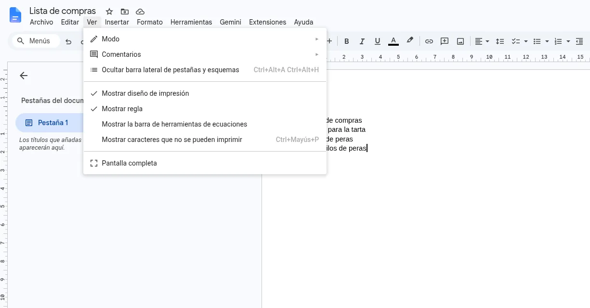
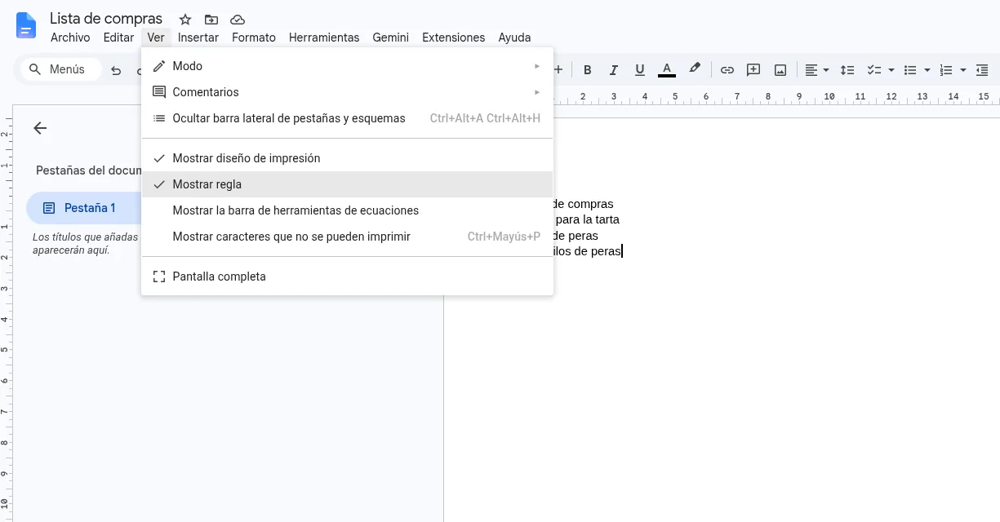
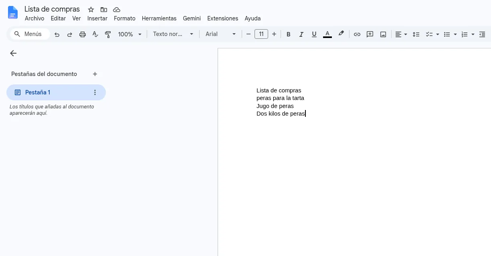
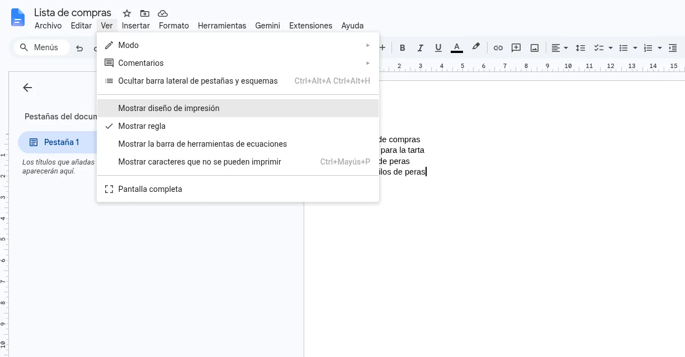
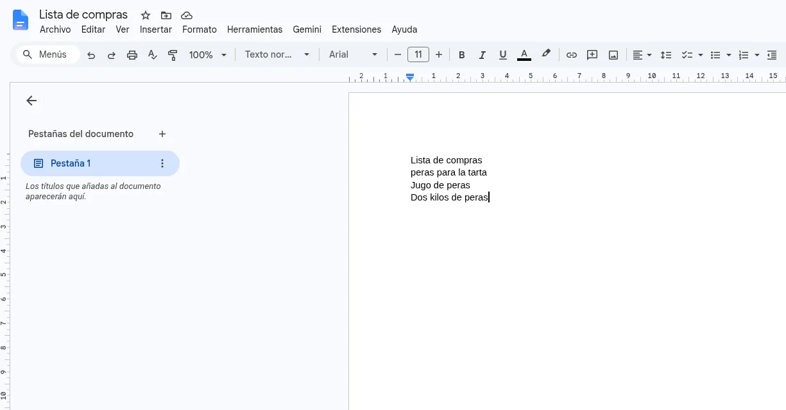
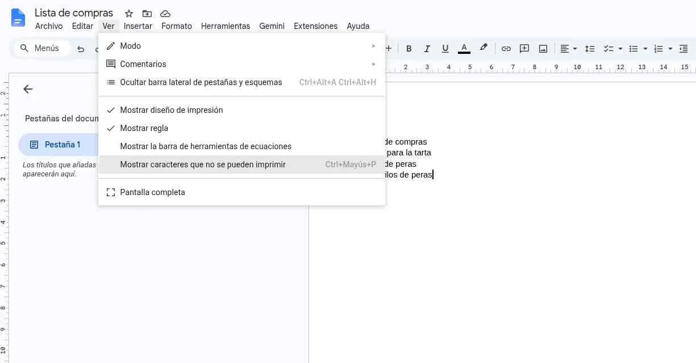
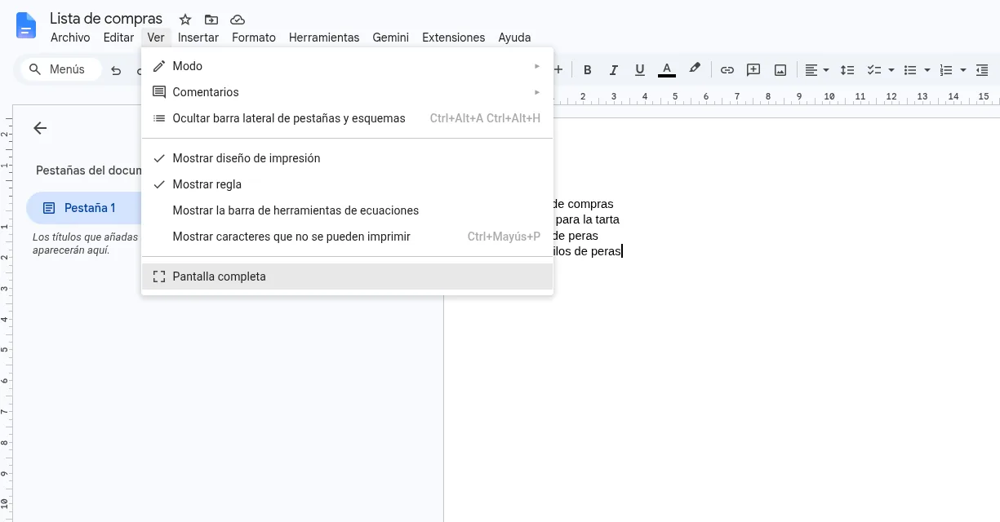
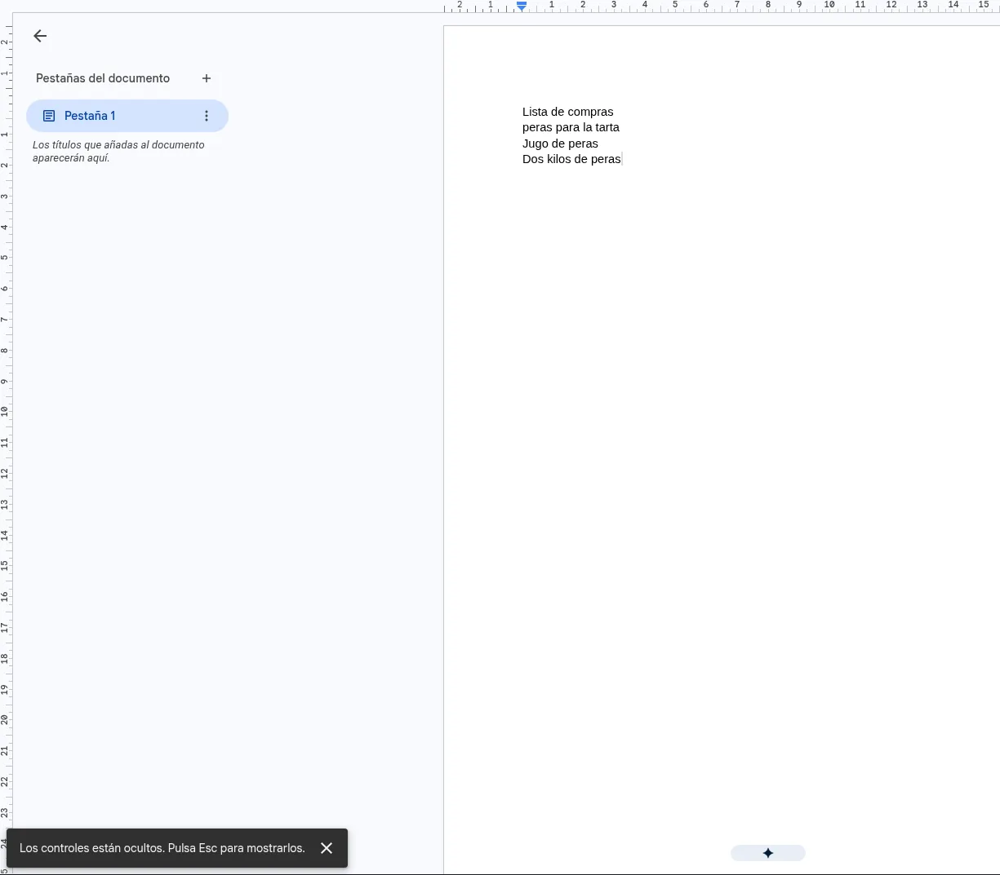

Curso de Google Documentos › Ver › Lección 16
Lección 16 de 53 · menú Ver
Regla, diseño de impresión y pantalla completa en Google Docs
Fecha del video: · Programado
¿Querés cambiar cómo ves tu Google Doc? En el menú Ver tenés cuatro opciones de vista: la regla, el diseño de impresión, los caracteres que no se pueden imprimir y la pantalla completa. Ninguna cambia el contenido del documento: solo cambian lo que ves vos.
En el ejemplo usamos el documento «Lista de compras»: activamos y desactivamos cada opción y al final lo dejamos todo como estaba.
Paso 1: abrí el menú Ver
Arriba, en la barra de menús, tocá Ver. En el medio del menú están las opciones de vista: Mostrar diseño de impresión, Mostrar regla, Mostrar caracteres que no se pueden imprimir y, abajo de todo, Pantalla completa. Las que están activas llevan un tilde ✓ a la izquierda; el nombre de la opción no cambia.

Paso 2: mostrá u ocultá la regla
La regla aparece sola al abrir un documento: una arriba y otra a la izquierda. Sirve para ver los márgenes y alinear el texto. Para ocultarla, tocá Ver → Mostrar regla (se va el tilde).

Sin la regla, el documento queda más limpio. Para que vuelva, tocá Mostrar regla otra vez.

Paso 3: diseño de impresión, con páginas y márgenes
Con Mostrar diseño de impresión activo ves el documento en páginas, con sus márgenes, encabezados y pies de página, como quedaría impreso. Esta opción solo existe en los documentos con formato con páginas.

Si le sacás el tilde, se ve el texto de corrido, sin el borde de la página. Para volver a las páginas, tocá la opción de nuevo.

Paso 4: mostrá los caracteres que no se pueden imprimir
Tocá Ver → Mostrar caracteres que no se pueden imprimir o usá el atajo Ctrl + Mayús + P.

El formato escondido aparece en azul: por ejemplo, el símbolo de párrafo ¶ al final de cada renglón. También se marcan saltos de línea, de página y de sección, tabulaciones y espacios. Para ocultarlos, tocá la opción (o el atajo) de nuevo.
Paso 5: pantalla completa y salir con Esc
Tocá Ver → Pantalla completa para esconder los menús y la barra de herramientas y quedarte solo con el documento.

Aparece el aviso «Los controles están ocultos. Pulsa Esc para mostrarlos.» Apretá Esc y vuelven los menús y las barras.

Tip: Google Docs recuerda la última vista que usaste, y cambiarla no cambia nada para las demás personas que miran el archivo. Fuentes oficiales: Cómo ver esquemas, resúmenes, reglas y caracteres no imprimibles y Cómo hacer zoom o cambiar la vista de tu documento. Mirá también el menú Ver completo (video: Google Docs: menú Ver paso a paso).
Mirá el Short
Estreno del Short: 29/11/2026 · 09:00 (hora Argentina)
Video relacionado: Google Docs: menú Ver paso a paso (tutorial completo) — el video largo del menú Ver (verlo en YouTube).
Fuente oficial: Ayuda de Editores de Documentos de Google. Capturas propias en un documento de ejemplo («Lista de compras»). El video usa voz generada con IA.